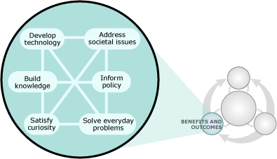
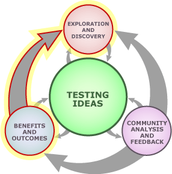

The process of science is a way of building knowledge about the universe — constructing new ideas that illuminate the world around us. Those ideas are inherently tentative, but as they cycle through the process of science again and again and are tested and retested in different ways, we become increasingly confident in them. Furthermore, through this same iterative process, ideas are modified, expanded, and combined into more powerful explanations. For example, a few observations about inheritance patterns in garden peas can — over many years and through the work of many different scientists — be built into the broad understanding of genetics offered by science today. So although the process of science is iterative, ideas do not churn through it repetitively. Instead, the cycle actively serves to construct and integrate scientific knowledge.
And that knowledge is useful for all sorts of things: from designing bridges, to slowing climate change, to prompting frequent hand washing during flu season. Scientific knowledge allows us to develop new technologies, solve practical problems, and make informed decisions — both individually and collectively. Because its products are so useful, the process of science is intertwined with those applications:
- New scientific knowledge may lead to new applications. For example, the discovery of the structure of DNA was a fundamental breakthrough in biology. It formed the underpinnings of research that would ultimately lead to a wide variety of practical applications, including DNA fingerprinting, genetically engineered crops, and tests for genetic diseases.
- New technological advances may lead to new scientific discoveries. For example, developing DNA copying and sequencing technologies has led to important breakthroughs in many areas of biology, especially in the reconstruction of the evolutionary relationships among organisms.
- Potential applications may motivate scientific investigations. For example, the possibility of engineering microorganisms to cheaply produce drugs for diseases like malaria motivates many researchers in the field to continue their studies of microbe genetics.
The process of science and you
This flowchart represents the process of formal science, but in fact, many aspects of this process are relevant to everyone and can be used in your everyday life — even if you are not an amateur or professional scientist. Sure, some elements of the process really only apply to formal science (e.g., publication, feedback from the scientific community), but others are widely applicable to everyday situations (e.g., asking questions, gathering evidence, solving practical problems). Understanding the process of science can help anyone develop a scientific outlook on life.